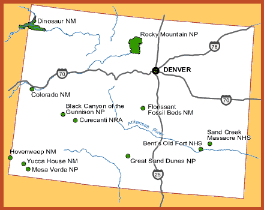

Colorado National Parks
- Rocky Mountain National Park, located in the northern part of Colorado, is world renowned for the beauty of its ancient mountains and the diversity of its plant and animal life. The park was established on January 26, 1915 and contains 60 peaks rising above 12,000 feet.
- Black Canyon of the Gunnison National Park, located in the western part of the state, is unique. The spectacular landscape was formed slowly by the action of water and rock scouring down through hard Proterozoic crystalline rock.
- Mesa Verde National Park is located near the New Mexico border. Spanish for “green table,” Mesa Verde is rich in cultural heritage. The well-preserved site presents an archeological glimpse of the lives of the Ancestral Pueblo people.
- Great Sand Dunes National Park and Preserve, located along the edge of the Sangre de Cristo Mountains in southern Colorado, is a pile of sand over 700 feet tall and covering over 54 square miles. This geologic wonderland became a national monument in 1932.
Home